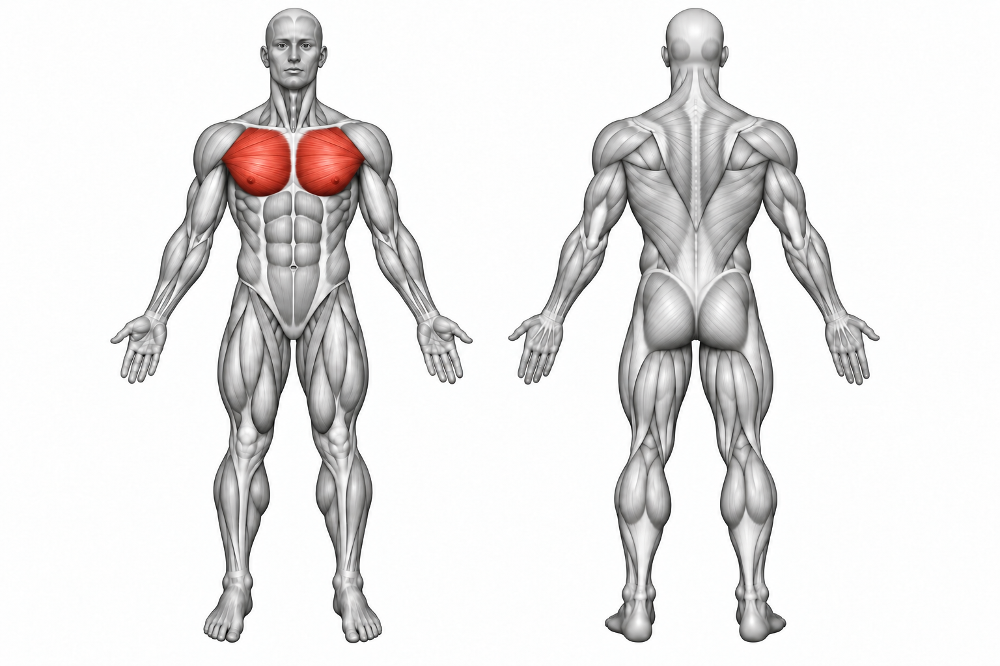

Pec Deck


How to Perform
Sit upright on the pec deck with your back against the pad. Position your arms on the machine's handles or pads and keep your feet planted firmly on the floor.
Bring the handles together in front of your chest while keeping a slight bend in your elbows. Slowly return the handles to the starting position without allowing the weight to pull your arms back too quickly.
Primary Muscles
Pectoralis major (Chest)
Secondary Muscles
Anterior deltoid (Front Delt)